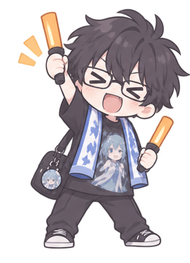
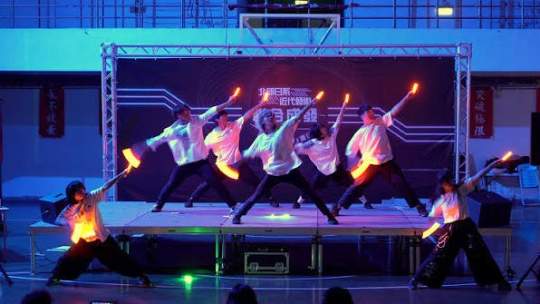
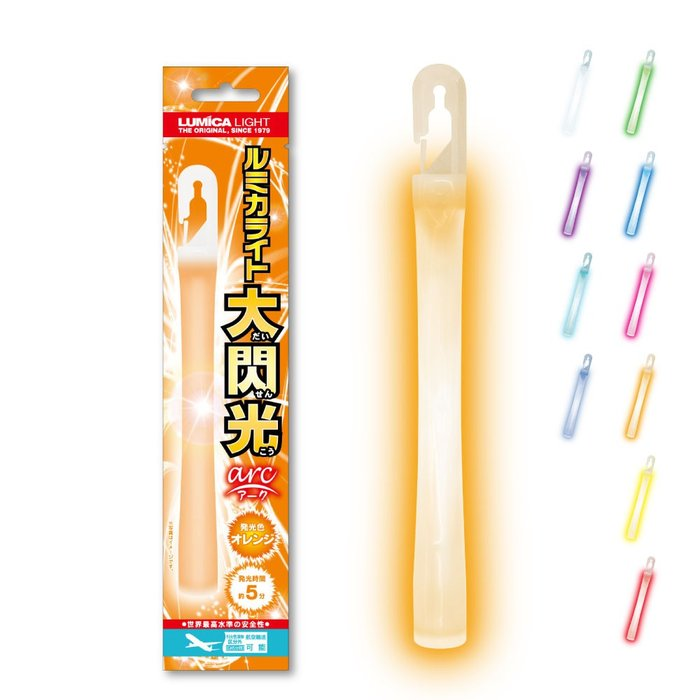
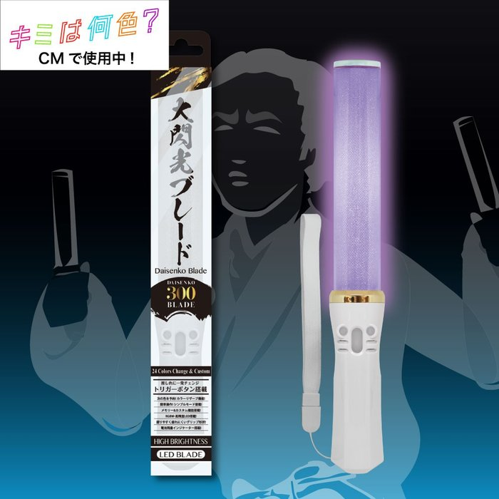
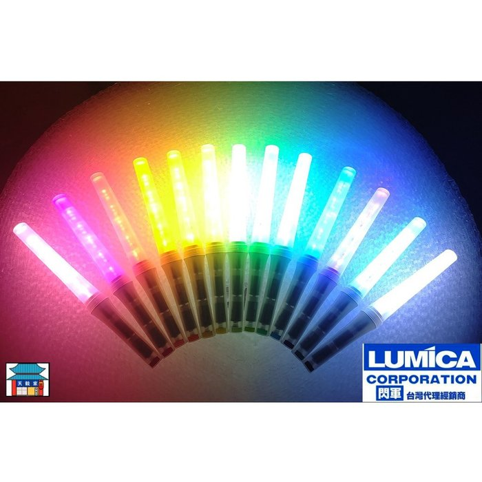
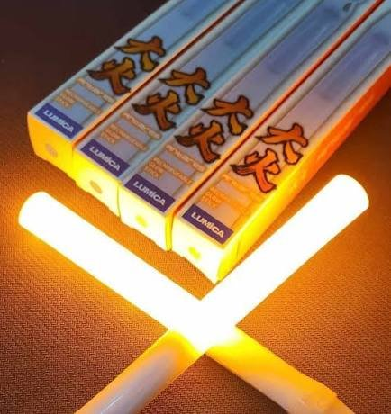

御宅藝文化講座
從應援到表演：喊 MIX、打技、守禮儀 ── 社團新生 120 分鐘入門課
今天的路線圖講解 85 分＋實作 25 分＋休息 10 分
| # | 單元 | 時間 |
|---|---|---|
| 1 | 御宅藝是什麼 | 12 分 |
| 2 | 從哪裡來 | 6 分 |
| 3 | 地下偶像與台灣御宅藝圈 | 14 分 |
| 4 | 螢光棒 | 10 分 |
| 5 | 曲子結構 | 8 分 |
| 6 | 打call：MIX 與家虎（帶念） | 15 分 |
| — | 休息 | 10 分 |
| 7 | 技：實作 | 25 分 |
| 8 | 現場禮儀與厄介 | 10 分 |
| 9 | 總結與 Q&A | 5 分 |
這份簡報怎麼來的
每張投影片都根據「御宅藝 LLM Wiki」撰寫，左下角的「依據」就是這張用到的 wiki 頁；wiki 頁再往下可以追到原始來源（維基百科、YouTube 教學、團體官網、社團成員的說明）。
看到這兩種標記
一句話定義
御宅藝（ヲタ芸／オタ芸）是偶像宅配合音樂，用舞蹈動作和喊聲來應援或表演的「藝」。
基本用語
- 日文是「アイドルオタクの芸」的簡稱
- 打藝（打つ）：表演御宅藝這個動作
- 打師（打ち師）：表演的人；台灣也叫藝師（同義詞）
- 不只偶像歌，也會配 Vocaloid 曲、一般日本流行歌來打
常見誤會
御宅藝不等於「螢光棒舞蹈」：EvolutioN 官網 FAQ 說明，御宅藝不一定要拿螢光棒，也不限於肢體動作。

三種御宅藝
| 一般應援 | 地下藝 | 表演藝 | |
|---|---|---|---|
| 別名 | — | 地下芸（日文） | 地上藝、サイリウムダンス、光棒藝 |
| 對誰 | 台上的偶像 | 台上的表演者 | 觀眾 |
| 怎麼做 | 觀眾席上揮螢光棒、喊 call | 極度誇張、扭曲的動作＋MIX，通常不拿螢光棒 | 技很多的螢光棒舞蹈，常常沒有喊聲 |
| 目的 | 替偶像加油 | 吸引表演者注意（刷認知）；DJ 場是同樂 | 表演給觀眾看 |
打call 是總稱
打call ＝ 現場配合歌曲喊口號、拍手、揮手臂的應援總稱；MIX、家虎、口上都是它延伸出來的形式。
一般應援的 call
喊偶像在歌曲中放入、粉絲記得住的專屬口號，目的是替偶像應援。
地下藝的 call
常是約定俗成的一套念法，有時跟偶像本身沒有關係；重點是好幾個人的聲音一起大到讓偶像注意到。
所以：地下藝也屬於打call；MIX 也不是地下藝專有 ── 一般偶像也可能放入專屬口號當作 MIX。
影片：台灣打師自己怎麼分類EvolutioN〈御宅藝文化詳細介紹〉00:33 起
看的時候注意
- 00:33 オタ芸＝地下藝：口號（例如家虎）＋動作，通常不拿螢光棒
- 01:06 ヲタ芸＝光棒藝：拿螢光棒揮出光跡，比起應援更偏向表現
- 01:06～01:38 技分成經典的定番技和種類極多的副歌技（據說超過 1000 種）
- 01:38 打call 也算御宅藝的一種，偏向應援
日本：從應援到表演
台灣：入坑的契機
地下偶像是什麼
相對於主流偶像、更重視現場演出的偶像類型。
- 多由小型演藝公司、音樂工作室經營，有的沒有公司支援
- 收入靠小型現場演出＋周邊商品
- 常見「拼盤」：多組表演者同場演出
- 台灣：約 45～50 多組、近 200 人；穿梭在每年約 1,000 場 ACG 活動中
對照在地偶像（ローカルアイドル）：強調以家鄉為活動中心 ── 本 wiki 分成兩個概念。
為什麼地下藝要「被看見」？
秋葉系偶像的歌迷總數少、常常好幾團同場；場地小、距離近，台上看得到也認得出個別粉絲 → 用誇張的動作讓自己被看見。（整理者推論，經社團成員同意）
圈內說法：打藝的目的「就是讓偶像知道我們，就是刷認知」。
台灣主要團體2021 年的團體地圖
| 地區 | 團體／打師 |
|---|---|
| 台北 | 赤式、魔亂、大安勢、小祈家 Family |
| 新竹 | 風城界隈 |
| 桃園 | Larry（個人打師） |
| 中部 | パンドラ（Pandora） |
| 高雄 | EvolutioN、PhoeniX、高雄藝師聯合 |
高雄藝師聯合
據 EvolutioN 的介紹影片，是台灣最早的打藝團體；爆紅的「戰鬥哥」也是成員。
團體怎麼傳承、怎麼活動
風城界隈：一屆傳一屆
- 2018-08 新竹高中動畫社學長怕「單純畫畫招不到人」，找到日本 Fly-N 的影片，在社團博覽會表演
- 組同好會「嶺風ヲタ」，迎新、成發表演，拉竹北高中動畫社一起打
- 下一屆用同樣方式收學弟 → 2020-01 正式創團
- 挑戰：團員上大學後分散各地
EvolutioN（高雄，2018～）
做影片、講座、舞台表演、辦比賽；團長 EOS 指導過中科實中打藝社（2021）、政大御宅藝社（2022）。
大家為什麼入坑？
看到戰鬥哥、LoveLive 應援、女僕咖啡廳偶像的應援、表演藝團體的演出 ── 最常聽到的一句：「很帥」。也有人從地下偶像場打地下藝，後來轉打表演藝。
比賽與台灣原創技
個人賽
一人雙手拿螢光棒演出；評分：動作節拍 30%、力道控制 30%、光跡呈現 20%、體態 10%、舞台表現 10%。複賽採 Scramble：隨機兩首副歌輪流即興。
團體賽
2～5 人原創編排；評分：整齊度 40%、編排創意 40%、執行完成度 10%、舞台表現 10%。
比賽中還有 DJ 帶大家打地下藝的「Party Time」。

原創技與「本家」
打師自創的技叫原創技，創作者叫那個技的本家。2025 年 EvolutioN 把 12 個台灣原創技帶到日本煌芒祭，例如：
- 殺意の百合（本家：小羅）
- 初心幻刃（戰鬥哥＆お茶ユ）
- 祈火（Hong）
化學 vs LED，台灣圈怎麼叫
| 化學螢光棒 | LED 螢光棒 | |
|---|---|---|
| 日文 | ケミカルライト、サイリウム | ペンライト |
| 發光 | 折斷玻璃安瓿，兩液反應發光 | 電池＋LED |
| 時間 | 一般 6～8 小時，用完即丟 | 可重複使用、可換色 |
| 台灣誰用 | 表演藝（大閃光）；地下偶像場也常見 | 演唱會應援（王劍） |
為什麼會亮：「酸化液」＋「蛍光液」起化學反應，發光時不發熱 ──「冷光」；反應完就不會再亮。
台灣也把 LED 螢光棒叫「手燈」。




打藝用的棒子：怎麼挑、怎麼折、怎麼拿
挑
- 化學棒常用 LUMICA「大閃光」、Riverroots「Flash Bomber」
- 挑發光 15 分鐘以內的版本，才有影片上的亮度
- 練習時可以改用電子螢光棒
折（讓化學棒發光）
- 幾支併在一起對折
- 單手用大拇指和食指凹（要練握力）
- 棒子對棒子敲、敲地板
拿
- 夾在指間、整隻手握住 ── 手張開時很好看
- 抓住棒子最頂端 ── 光弧比較長
- 用大拇指抓，像爪子（特殊）
EvolutioN：怎麼握都可以，不會掉棒最重要。
備註教學影片的螢光棒由 LUMICA 在台經銷商提供，LUMICA 也贊助比賽 ── 推薦品牌時要考慮這層關係。（整理者推論）
應援色與安全
應援色
2010 年前後，每位成員各有代表色的大型團體走紅，觀眾開始自備多色螢光棒對應成員。
車站不要揮
在月台或車廂揮螢光棒（特別是紅色），可能被誤認為緊急停車信號。
化學棒安全須知
- 不要用力折、不要往膝蓋上敲：藥液可能噴出
- 藥液進眼睛 → 不要揉，用流水沖，不舒服就就醫；沾到皮膚 → 用水或肥皂水洗
- 不要加熱、不要放冷凍庫
- 注意不要甩飛；把棒子丟出去砸到人是典型的厄介行為
先聽懂段落，才知道什麼時候喊、什麼時候打
| 段落 | 意思 |
|---|---|
| 前奏 | 歌聲開始前的器樂段落 |
| Aメロ（主歌） | 第一段旋律 |
| Bメロ（導歌） | 接往副歌的過渡旋律 |
| サビ（副歌） | 歌曲最高潮、重複的段落 |
| 間奏 | 段與段之間的器樂段落 |
| Cメロ | 二段副歌之後、通常速度變慢的新段落 |
| 尾奏 | 最後一段副歌之後的結尾 |
段落 × 喊什麼 × 打什麼
| 段落 | 應援：喊什麼 | 表演藝：打什麼技 |
|---|---|---|
| 前奏 | 「woo hey」抓拍子 → 發動 MIX；前奏夠長可以喊三連MIX | — |
| Aメロ（主歌） | 「ニーハイ、オイハイ」call：穿長襪的動作＋拍手 | OAD、NIHAIOHAI、SOYA、YDDJJ（每個 8 拍） |
| Bメロ（導歌） | 歌曲進行中的 MIX 一般在導歌 | ロザリオ、ロサンゼルス |
| 副歌前的空檔 | 家虎（前一句先喊兩聲「耶」預備） | — |
| サビ（副歌） | — | 副歌技（據說超過 1000 種） |
| 句與句之間 | 倍速MIX | — |
同一段 Aメロ，應援的人喊「ニーハイ、オイハイ」、表演藝的人打 NIHAIOHAI ── 應援和表演在同一段做相似的動作。（整理者推論） 喊法「沒有絕對正確，但順序有規律」。
MIX 怎麼發動
MIX ＝ 在前奏、間奏等空檔，觀眾一起喊出的一串固定單字。
① 抓拍子
前奏一開始喊「woo hey」，一般約四次；前奏長的話可以喊到約 20 次。
② 警報
拍手（pa～papapa pa）＋「sha～ikuzo」；也有「あーーーーよっしゃぁ行くぞぉ！」。
③ 喊 MIX
一般 MIX 7 個單字、每段 8 拍。最完美：喊完剛好偶像開始唱。
想喊得熱血：身體稍微往下壓、帶點沙啞聲。假發動：拍手後改喊「まだいかない」並用手臂比 X，兩次後才真正開始。
三連MIX（虎火三連）點格子或按「下一個」一起念
| 英語MIX | タイガーTaigā | ファイヤーFaiyā | サイバーSaibā | ファイバーFaibā | ダイバーDaibā | バイバーBaibā | ジャージャーJā Jā |
|---|---|---|---|---|---|---|---|
| 日本語MIX | 虎Tora | 火Hi | 人造Jinzō | 繊維Sen'i | 海女Ama | 振動Shindō | 化繊飛除去Kasen Tobi Jokyo |
| 愛努語MIX | チャペChape | アペApe | カラKara | キナKina | ララRara | トゥスケTusuke | ミョーホントゥスケMyōhontusuke |
家虎（イエッタイガー）
名稱
「イエ」寫成漢字「家」、「タイガー」就是「虎」→ 家虎。對著偶像大喊「イエッタイガー」的應援行為。後面可以接「ファイボー、ワイパー」。
什麼時候喊
短促有力，插在留白處：只要有兩三秒的空檔；常見是副歌前，前一句先喊兩聲「耶」預備。2018 年的偶像現場「幾乎是必備知識」。
但是……
- 2020-02-02 ブシロード的木谷高明宣布根絕家虎：違反者要求退場、列入黑名單、考慮求償
- 在非地下偶像系的偶像演唱會上大喊家虎是厄介，通常會被官方禁止
- 在台灣，喊家虎會被當成厄介；但地下藝在 DJ 場、地下偶像場算同樂 ── 家虎是不是也看場合，wiki 還沒確認
→ 學會怎麼喊，也要知道哪裡不能喊（單元 8）。
影片：如何正確發動 MIX無用男Rain
看的時候注意
- 00:30 前奏的「woo hey」
- 01:01 拍手 → 開始喊；英語 → 日本語 → 愛努語
- 02:27 倍速MIX
- 03:49 家虎的時機
看完後全體跟著影片喊一輪三連MIX。
下半場：拿起螢光棒，開始打技！（化學棒先別折）
站姿與節拍
站姿
・祈哥教學：腳打開約 90 度以上
・EvolutioN FAQ：腳尖朝前，約 1.5～2 倍肩寬，用大腿和下盤出力、膝蓋微微向前、上身挺直
節拍
入門技以 8 拍為一組練；EvolutioN 把一個「技」定義為 4 個八拍組成的連續動作。
技的兩大類
| 定番技 | 副歌技 | |
|---|---|---|
| 意思 | 經典、固定的動作 | 副歌時打的技，據說超過 1000 種 |
| 例子 | OAD、ロザリオ、ロマンス | サンダースネイク（雷蛇）等 |
今天的順序：主歌技 4 個 → 導歌技 2 個 → 看副歌技示範。
OAD左右交替劃出光弧、在臉旁拍手
動作
- 雙手在一側預備
- 從右邊劃到左上角，在臉旁拍一下
- 再劃到另一邊做同樣的動作
- 劃過去時膝蓋朝正前方微彎當緩衝
8 拍：第 1 拍開始、第 2 拍擊掌。
新手常犯的錯
- 屁股往後、身體跟著轉 → 從側面看手應該是一個平面
- 手肘往後「挖一下」→ 軌道不平均
- 骨盆前傾、人往後躺 → 難回來、容易壓到腰
關西OAD vs 關東OAD
今天教的是關西OAD；關東OAD 以左手為主要揮舞方向、右手畫小圈。台灣圈會區分兩者。
NIHAIOHAI、SOYA、YDDJJ
NIHAIOHAI（過膝襪）
手碰到腳踝，像穿過膝襪一樣沿腿拉到胸口，往內轉、往下壓，在頭上拍一下。
應援版就是 Aメロ 的「ニーハイ、オイハイ」call（不拿棒）。（整理者推論）
SOYA
十字架＋「四突」（像正面打拳，一拍換一次手）。
手肘不要打直鎖死，會受傷；有定點比較好看，不要用甩的。
YDDJJ
從斜下方劃出扇形大圈，接「風火輪」，再用身體帶起來接回 OAD。
圈要畫大；起身接 OAD 的時間點是新手最大的障礙。
影片：主歌技串起來祈哥〈新手村入門〉主歌篇 12:00 起
跟打流程
- 先看一次示範
- OAD → NIHAIOHAI → SOYA → YDDJJ，每個 8 拍
- 放慢、全體一起打一輪
- 原速再打一輪
YDDJJ 起身可以直接接回 OAD，形成循環。
ロザリオ（十字架）與ロサンゼルス（洛杉磯）
ロザリオ（十字架）
- 右手從後方拉到頭頂，在上方繞圈，再全力往下打（像用拳頭往下槌）
- 打下去時屁股往下坐、肚子往上提，才站得穩
- 拍數：一個動作 4 拍，做兩次合起來是一個八拍
ロサンゼルス（洛杉磯）
- 雙手在左下 → 從左側往內繞上來 → 轉身延伸到右側 → 最後跟十字架一樣往下打
- 8 拍
- 往上延伸要畫橢圓；讓身體帶著手一起延伸，轉身控制在同一平面
影片：導歌篇跟打＋副歌技示範
祈哥〈新手村入門〉導歌篇 → 全體跟打十字架、洛杉磯
副歌篇 #1：只當視覺示範（影片沒有字幕，內容沒有寫進 wiki）
副歌技舉例：サンダースネイク（雷蛇）── 直線＋畫圓，熟練後適合多人同步。另一個定番動作 ロマンス（羅曼史）是 1989 年的原型，應援、表演兩邊都有人打（整理者推論）。
御宅藝為什麼會被禁止
被批評的地方
- 打藝變成來活動的主要目的（本末倒置）
- 沉浸在自己的世界、不顧周圍
- 掛上「オタ芸」之名就等於「迷惑行為」
厄介（やっかい）是什麼
在 live 現場用不正當的應援方式，影響周圍觀眾的行為。
| 場合（台灣） | 打地下藝、喊家虎 |
|---|---|
| 正經的演唱會 | 會被當成厄介 |
| DJ 場、地下偶像場 | 打地下藝是一般的同樂 |
不分場合都是厄介
丟螢光棒砸到人、應援過度造成財物損壞、大功率光學設備、表演時在台下跑動、衝著表演者下跪、敲鑼打鼓、吹管樂器、無人機……
進場前的檢查表
- 這是什麼場合？演唱會／DJ 場／地下偶像場
- 場地規定：能不能帶化學螢光棒？能不能喊家虎？
- 旁邊的人有沒有空間？揮棒不要甩飛
- 不丟棒子、不用大功率燈具、表演時不在台下跑
- 化學棒藥液進眼睛：不要揉，用流水沖
- 散場到車站：收起螢光棒（尤其紅色）
- 不確定能不能喊／打 → 先看周圍、先不要
這張是依 wiki 的事實整理成的清單（整理者整理）。
三句話帶走
- 御宅藝分三種：一般應援、地下藝、表演藝；打call 是喊聲應援的總稱。
- 喊 MIX、打技都跟著曲子段落走：前奏 MIX、主歌 OAD、導歌十字架、副歌前家虎。
- 同一個動作，換個場合可能就是厄介 ── 先確認場合和規定再打。
延伸資源與資料缺口
想學更多
- 御宅藝 LLM Wiki：wiki/index.md（20 份來源、50 多頁）
- 入門教學：祈哥〈新手村入門〉主歌篇、導歌篇
- MIX：無用男Rain 的 MIX 講座
- 台灣圈與比賽：EvolutioN 官網、介紹影片
wiki 還缺什麼（歡迎提供來源）
- 厄介的日文定義
- 副歌技的具體教學、紋章技
- NIHAIOHAI、SOYA、YDDJJ 的日文原名
- 台灣原創技的動作；北部、中部團體的觀點
- 一般應援的揮棒方法；MAF展是什麼
Q & A